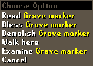

Death in RuneScape
What happens when my character dies? | Will I lose my items? | Can I get my items back? | Upgrading your gravestone | Gravestones in free worlds
What happens when my character dies?

This isn't something to be too afraid of, as your character will always 'respawn' in perfect health (although probably missing a few items; more on that later).
To start with, when your character dies you will always respawn in the grounds of Lumbridge Castle. By completing quests, members can move their respawn location to somewhere more convenient depending on their needs.
- To respawn in Falador, complete the Recruitment Drive quest.
- To respawn in Camelot, complete the King's Ransom quest.
Will I lose my items?
Normally, when your character dies, you are only allowed to retain your three most valuable items. Be aware that an item's value is decided by the game, not the market value. Any other items you are carrying will drop on the ground where you died.
To find out which items you will keep, you can look at your 'Items kept on death' interface. Read the Controls - Inventory article to find out more about this feature.
Any items you drop when you die will be invisible to other players, protected by a gravestone (see below) for a certain amount of time.
|
Abyss/PK skull |
There are two exceptions to keeping three items that you should be aware of: being 'skulled' when you enter the Abyss, or being skulled by attacking someone else on a PvP or Bounty world. In both of these cases, you will lose ALL of your items.
However you die, if your Prayer level is high enough, you will be able to use the 'Protect Item' prayer to hold onto one extra item. So, if you die normally, you will be able to retain four items, and if you were skulled by the Abyss or on a PvP world, you will hold onto one item.
Can I get my items back?
There is a chance that you can, as long as you're quick or had friends near where you were slain. There are a few exceptions to this, which includes Bounty Worlds, a few other minigames (like Temple Trekking/Burgh de Rott Ramble) and at certain points in some quests.
When you die and drop items (except in the instances mentioned above), a gravestone will appear at the spot you died, guarding your possessions and acting as a warning to others. This gravestone will remain in place for between two and five minutes (depending on your gravestone - see below). As your time runs out, your gravestone will begin to crumble. A friendly player can fix up your gravestone by right-clicking and selecting 'Repair'. They need to have a Prayer level of 2, and this will hold your gravestone in place for another five minutes at a cost of about 5 Prayer points. If the player repairing your gravestone has less than 5 Prayer points, it will not remain as long.
 Alternatively, a player may choose to 'Bless' your gravestone, imbuing it with the strength of their faith to keep it in place for up to an hour. This requires a Prayer level of 70 and will cost the player blessing it as many Prayer points as it requires. This will never take their Prayer points below 10 (just in case they need them!).
The length of time your gravestone remains in place depends on how many Prayer points the player blessing your gravestone has available and how long it has been since you died. Note that, regardless of when the gravestone was blessed, it will crumble to dust one hour after you died. It will also collapse when you log out, or if you die again and drop more items, although your items may remain available for a while longer if your gravestone has been repaired or blessed recently.
To make it easier to get to your items when you return, you (and only you!) can right-click on your gravestone and select 'Demolish'. This won't make your items vanish immediately, so you should still be able to pick them up before they despawn.
Upgrading your gravestone
To change your gravestone you'll first need to complete The Restless Ghost. If you've done that, you can speak to Father Aereck in Lumbridge Church and offer a small donation to one of his charities for the following options; the more expensive gravestones will protect your items for longer before collapsing, as you can see in the 'Duration' column.
Note that the type of gravestone you have will not increase the length of time repairing or blessing it holds it in place.
You will retain your gravestone style until you buy a new one.
| Style | Cost | Duration | Style | Cost | Duration | |
 Memorial Plaque |
None | 2 minutes |  Flag |
50 coins | 2 minutes | |
 Small Gravestone |
500 coins | 2 minutes |  Ornate Gravestone |
5,000 coins | 3 minutes |

| Style | Cost and Requirements | Duration | Style | Cost and Requirements | Duration | |
Memorial Plaque |
None | 2 minutes |  Font of Life |
50,000 coins | 4 minutes | |
 Stele |
50,000 coins | 4 minutes |  Symbol of Saradomin |
50,000 coins | 4 minutes | |
 Symbol of Zamorak |
50,000 coins | 4 minutes |  Symbol of Guthix |
50,000 coins | 4 minutes | |
 Symbol of Bandos |
50,000 coins Land of the Goblins |
4 minutes |  Symbol of Armadyl |
50,000 coins Temple of Ikov |
4 minutes | |
 Ancient Symbol |
50,000 coins Desert Treasure |
4 minutes |  Angel of Death |
500,000 coins | 5 minutes |
Will my gravestone work on a free world?
Yes! Your gravestone will look the same even when playing on a free world. Because many people there will not have access to the same range of styles, you'll be able to spot your gravestone even more easily in an area littered with the bodies of the slain.

|
More articles in How do I get started?
|
|